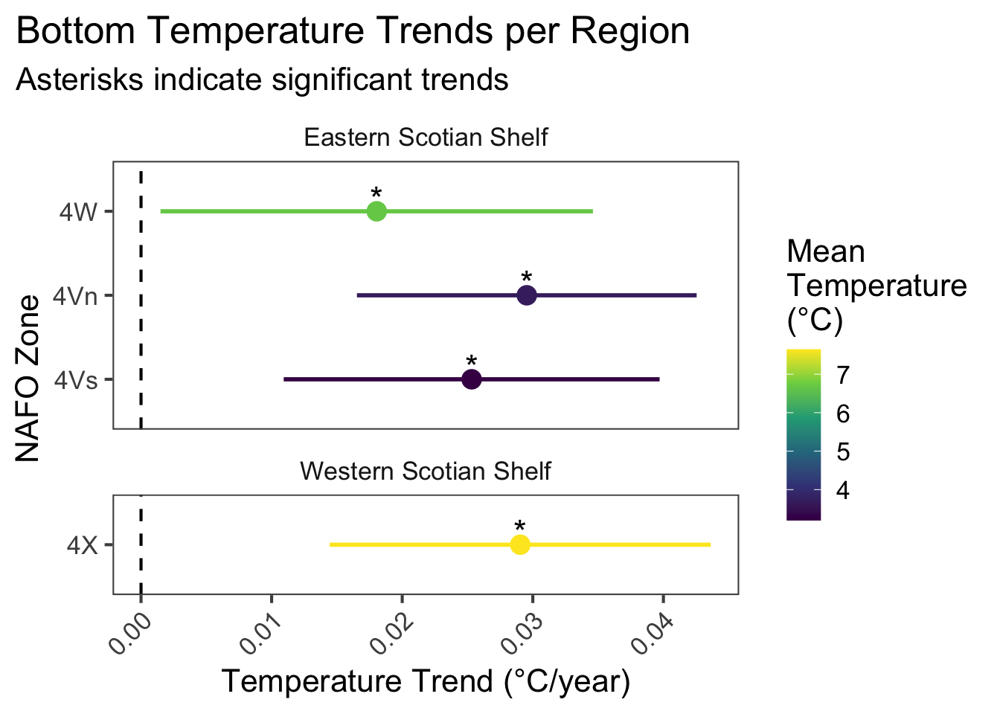

1 Bottom Temperature (AZMP)
Data Type: Tabular Data
Spatial Scope: Scotian Shelf (4X, 4V, 4W)
Duration 1950-2024
Source: DFO Atlantic Zone Monitoring Program via azmpdata
1.1 Introduction to Indicator
AZMP Bottom Temperature data represent derived and regionally summarized data from the Atlantic Zone Monitoring Program (AZMP), accessed via the azmpdata R package. In azmpdata, raw temperature observations from fixed AZMP monitoring stations are quality controlled and aggregated into 12 nested and non-mutually-exclusive regional aggregations, generating annual timeseries of variables for as long as records exist.
AZMP Bottom Temperature is derived from CTD profiles as the deepest reliable temperature measurement at each fixed monitoring station, and area-level values are calculated as the mean of station-level bottom temperatures within predefined spatial aggregations on an annual scale.
1.3 Trends
Mean AZMP Bottom Temperature varies between regions, with the highest value of 7.64°C in 4X, and the lowest value of 3.2°C found in 4Vs. 3 regions had their highest temperature values within the last 10 years of sampling (2014-2024) (Fig. 1.1).
In the most recent year of sampling (2024), 1 regions had values that are high compared to their overall timeseries (>70th percentile), 2 regions had values that were moderate (between 30th and 70th percentile), and 1 regions had low values (<30th percentile) within their timeseries.

Figure 1.2: Model slopes of bottom temperature over time for NAFO zones in the Eastern and Western Scnotian Shelf Regions. Asterisks indicate significant trends.
The overall trend is increasing across regions. 4 regional subdivisions have increasing Bottom Temperature trends (all of which are statistically significant) and 0 have negative trends (Fig 1.2).
Figure 1.3: Map of target study areas colored by mean temperature (left) and warming trend over time (right).
1.3.1 Summary Table by Region
| Metric | Eastern Scotian Shelf | Western Scotian Shelf |
|---|---|---|
| Mean Value |
4Vn: 3.68°C 4Vs: 3.2°C 4W: 6.68°C |
4X: 7.64°C |
| Warming Trend |
4Vn: 0.03°C/year * 4Vs: 0.025°C/year * 4W: 0.018°C/year * |
4X: 0.029°C/year * |
| Hottest Year |
4Vn: 2020 (5.27°C) 4Vs: 2015 (5.02°C) 4W: 2022 (9.26°C) |
4X: 2012 (9.53°C) |
| Coldest Year |
4Vn: 1989 (2°C) 4Vs: 1990 (1.39°C) 4W: 2004 (4.73°C) |
4X: 1998 (5.45°C) |
1.4 Relevance to Research and Stock Assessments
Sea bottom temperature is highly relevant to population dynamics and spatial distributions, particularly for benthic or bottom-associated species. The effects of sea bottom temperature on fisheries is expected to be variable between regions and species, since thermal envelopes vary across species and shifts in temperature can increase or decrease preferred thermal habitat across regions.
In the Scotian Shelf-Bay of Fundy region, warming bottom temperatures have been associated with negative impacts and/or northward distribution shifts to key decapod species, northern shrimp and snow crab, for which this region represents the southernmost extent of both fisheries (Zisserson and Cook 2017; Chang et al. 2025). Alternatively, recent increases in bottom temperature across the Northwestern Atlantic have increased suitable thermal habitat for halibut in most Eastern Canadian NAFO zones, and models project further increases in abundance within the Canadian range as bottom temperatures continue to increase (Shackell et al. 2022; Czich et al. 2023).
1.5 Variable Definitions
| variable | description | unit |
|---|---|---|
| year | Year of data collection | |
| region | Region over which records are summarized | |
| mean_value | Regionally-aggregated annual mean temperature | °C |